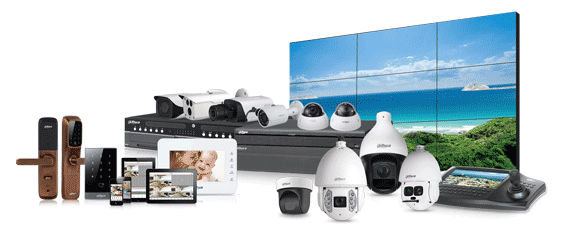
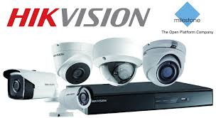

| Home About | |
|  |
DahuaDahua has invested about 10% of its annual sales revenue in R&D since 2014. The company has four research institutes – Advanced Technology Institute, Big Data Institute, Chip Institute and Video Cloud Institute -- and more than 6,000 R&D engineers and technical staff working on cutting-edge technologies in AI, IoT, Cloud services, video, cyber security, and software reliability and other technologies. Dahua has registered over 800 patents as of 2016.Since 2014, Dahua has ranked 2nd in the global video surveillance equipment market according to an IHS report, and in 2017 Dahua ranked 3rd in the a&s international "Security 50". Dahua’s core video surveillance product line, including network cameras, NVRs, and HD over coax, can be applied in many sectors, including banking & finance, government, industrial, retail, sports & leisure, transportation, and energy. |
|  |
HikiVision GlobalAs an independent and publicly traded corporation, Hikvision has a diverse set of private and public shareholders. As of June 30, 2016, 41.88% of Hikvision’s shares are jointly owned by China Electronics Technology HIK Group Co., Ltd. (CETHIK) and CETC No. 52 Research Institute, both are part of CETC, a state-owned enterprise; 18.28% is privately owned by Mr. Kung Hung Ka (a Hong Kong permanent resident); 8.48% is owned by the company’s founders and executives; and the remaining 31.36% is owned by A-shares investors; International institutional investors such as UBS AG and JP Morgan are among Hikvision’s top 10 shareholders. Currently, Hikvision’s Board of Directors consists of eight directors, three of whom are independent directors. Five non-independent directors include Mr. Chen Zongnian and Mr. Liu Xiang designated by CETHIK and CETC No. 52 Research Institute; Mr. Kung Hung Ka, the founding shareholder; and, Mr. Hu Yangzhong and Mr. Wu Weiqi on behalf of the Company’s senior management team. The three independent directors are Mr. Cheng Tien-Chong, former president of Hewlett-Packard China, president of Texas Instruments Asia Pacific, and vice president of Hon Hai Precision Industry Co. in Taiwan; Mr. Wang Zhidong, founder of SINA Corporation listed on NASDAQ; and Mr. Lu Jianzhong, a former partner at PricewaterhouseCoopers. As Hikvision’s Chief Executive Officer, Mr. Hu Yangzhong leads the senior management team, and oversees the Company’s daily management and business operation.Hikvision carries out its daily operation strictly in accordance with the applicable laws and commercial-oriented principles. Shareholders Meetings, Board Meetings and Supervisory Meetings, which form the Company’s corporate governance structure, are operated according to the Articles of Association and Internal Rules of Procedures. |